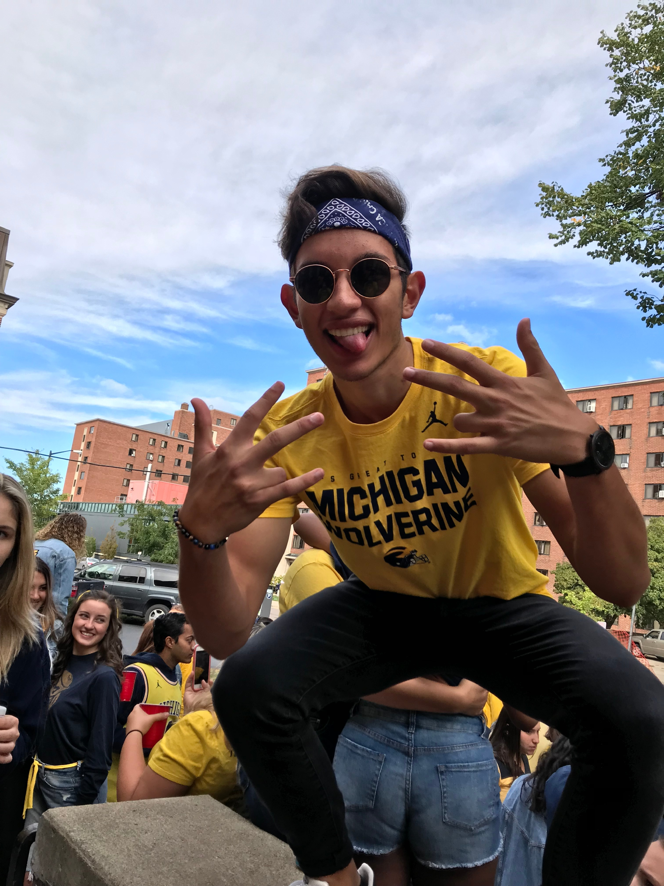

Team of the Week
- Fantasy Points34.70
- Total Touches29
- Receptions6
- Yards from Scrimmage147
- Touchdowns2
Nobody else was particularly close. Brent Hurlburt's Uncle Lamb's posted the league's only 160-plus performance in Week 1, built on the back of a three-headed attack — Amon-Ra St. Brown (28.7), Chris Olave (30.2) and Jalen Hurts (25.72) all finished as top options at their position — but it was the Raiders' Ashton Jeanty, entering his second pro season, who did the heaviest lifting. Facing Miami in the Raiders' opener, Jeanty touched the ball a staggering 29 times, turning that workload into 147 yards from scrimmage, six catches out of the backfield, and two touchdowns. That's a bell-cow workload most leagues would kill for, and it landed on the one roster that also happened to survive the tightest finish of the week.
It was, fittingly, the closest final margin of any Week 1 matchup — Uncle Lamb's needed every bit of Jeanty's workload to hold off Austin Gauss's Puka Bites Back by just 8.36 points. Full breakdown of that finish is below in Miracles Come True.
Week 1 Results
Most Wanted
Chug Clause Violators — League Rule, Sec. "Other"

Miracles Come True
Started for Jon Hurlburt's Geezers n' Beaters and delivered a historic afternoon — 144 yards (104 after contact) and three touchdowns against the Colts. Henry passed Marcus Allen for sole possession of 125 career rushing touchdowns and set the all-time NFL record with his 26th career game of 100+ rushing yards and multiple rushing scores, breaking a tie with Jim Brown. A 37.3-point week from a player plenty of leagues wrote off as a name-value RB2 helped push Geezers n' Beaters to a comfortable 17.68-point win.
After an injury-shortened, disappointing 2025, Olave looked like his old self in Week 1 — including a 47-yard touchdown strike that had Brent Hurlburt's group chat buzzing. The Saints themselves lost a wild 31-30 overtime game to Detroit, but for fantasy purposes Olave's bounce-back game was exactly what kept Uncle Lamb's ahead of Puka Bites Back's own huge performances (Kenneth Walker III went for 41.1) in the tightest finish of the week — an 8.36-point win that could easily have gone the other way.
Injury Recap
A.J. Brown
Suffered a high-ankle sprain in the third quarter of the Patriots' Wednesday night opener against Seattle, coming down awkwardly after a defensive back broke up a pass in his direction. New England placed him on IR Saturday — he's expected to miss roughly six weeks and will avoid surgery, but that's at least four games gone (Pittsburgh, Jacksonville, Buffalo, Las Vegas) for a Costa Rico roster that leaned on him as a true WR1.
Zay Flowers
Was in the middle of one of the best halves of his career — five catches, 150 yards, and a 54-yard touchdown weaving through the Colts' secondary — when a hamstring injury (the same one that bothered him in camp) sent him to the locker room right before halftime. The good news: it's considered minor, and he's day-to-day heading into Week 2.
Ladd McConkey
Left the Chargers' Week 1 loss with a rib injury and will undergo testing to determine severity. He'd already done enough before exiting to finish as White Men Can't Jump's second-highest scorer (19.2 pts). Head coach Jim Harbaugh called him day-to-day and said the team hasn't ruled out IR, but wants to "assess it" before deciding — worth watching closely ahead of Week 2 lineup decisions.
Corrections
An apology is owed to our readers. In this issue's first printing, we identified both Ashton Jeanty and Colston Loveland as rookies — they are not. Both are entering their second NFL seasons in 2026, having been drafted in 2025, and a paper that builds its whole identity on knowing the roster should know better. The error has been corrected throughout this issue. We thank the reader who caught it before it hardened into group-chat legend, and we'll be checking our notes more closely before next week's edition. — The Editor